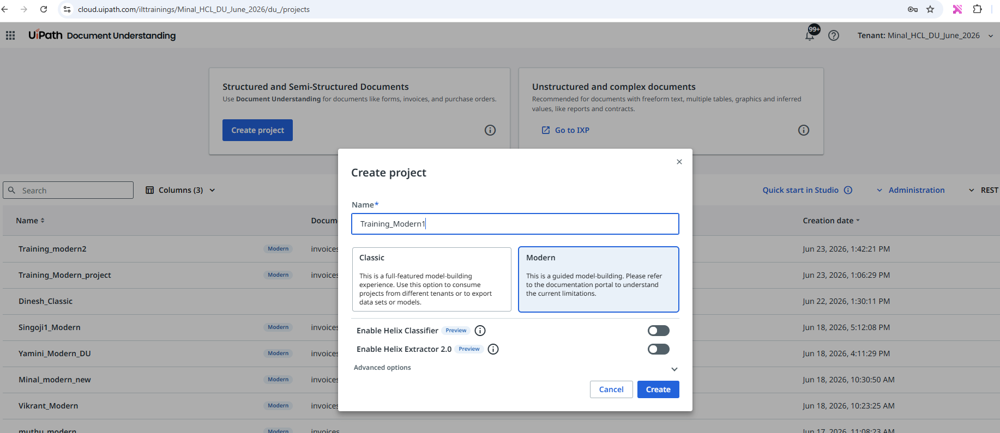
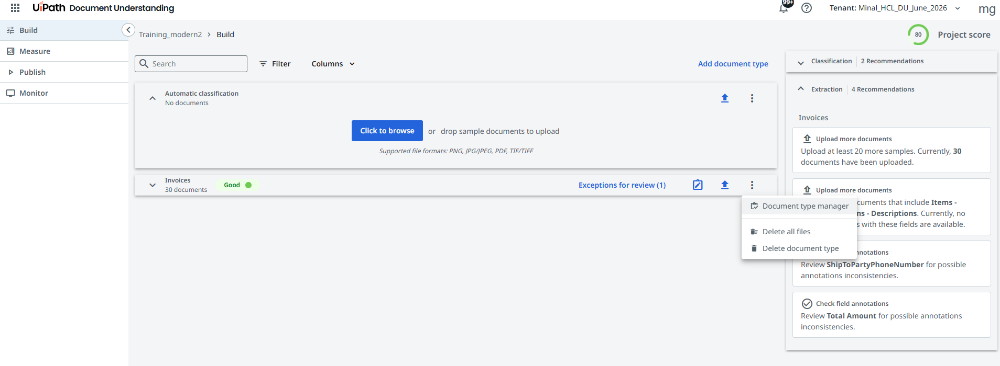
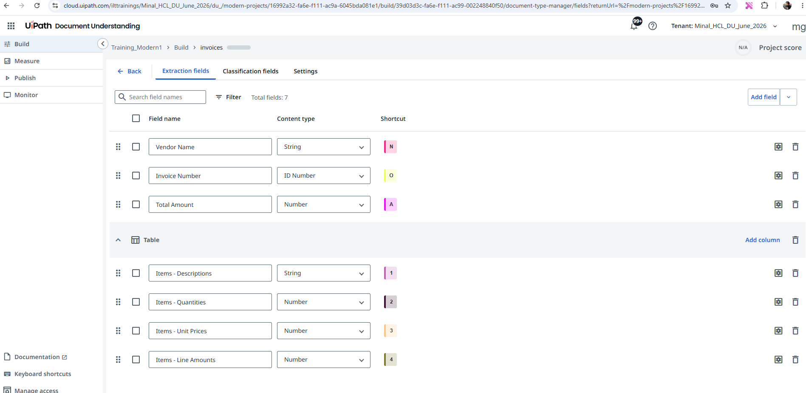

Practical Exercise : Extracting Data from Invoices
🎯 What You Will Do
- Follow along with the step-by-step walkthrough video for end-to-end invoice extraction
- Set up a Modern Document Understanding project for semi-structured invoices
- Annotate, train, publish, and consume the model in a Studio workflow
Walkthrough Video
Watch the full practical walkthrough below. Follow along in your own UiPath environment to build the invoice extraction project step by step.
UiPath Document Understanding (Modern Projects) — Step-by-Step
1. Create a New Document Understanding Project
- Open UiPath Document Understanding Service in Automation Cloud.
- Select Create Project.

- Give name as
Training_Modernand click Save. - Add the document type, choose Invoices and click Add.
2. Configure Extraction Fields
- Click on 3 dots and click on Document Type Manager.

- Click on the Extraction Fields tab. Keep these fields and remove all the rest of the fields.

- Add a new Extraction field called ShipToPartyPhoneNumber of type String.
3. Upload Sample Documents
- Navigate to the Build section.
- Upload sample invoice documents.
- Wait for the documents to be processed.
- Verify that all uploaded files are available for annotation.
4. Annotate Documents
- Open a sample invoice.
- Select a field from the Extraction Fields panel.
- Highlight the corresponding value on the invoice.
- Map:
- ShipToPartyPhoneNumber
- Vendor Name
- Invoice Number
- Total Amount
- Annotate table columns for line-item extraction if applicable.
- Repeat for all required fields.
5. Validate Annotations
- Review all highlighted fields.
- Ensure each field is mapped correctly.
- Check confidence scores and extraction quality.
- Save the annotations.
6. Check the Measure Section
- Go to Metrics.
- Ensure you have satisfactory accuracy percentage for each field.
7. Publish the Extraction Model
- Navigate to Publish.
- Click on Create Project Version, choose the document type as Invoices, give a name and click on Create.
- Toggle the deployed button.
8. Create a Studio Automation
- Open UiPath Studio.
- Create a new automation project.
- Run the studio web workflow and test it.
- Observe the execution logs.
- Verify extraction results.
- Confirm that invoice data is extracted successfully.